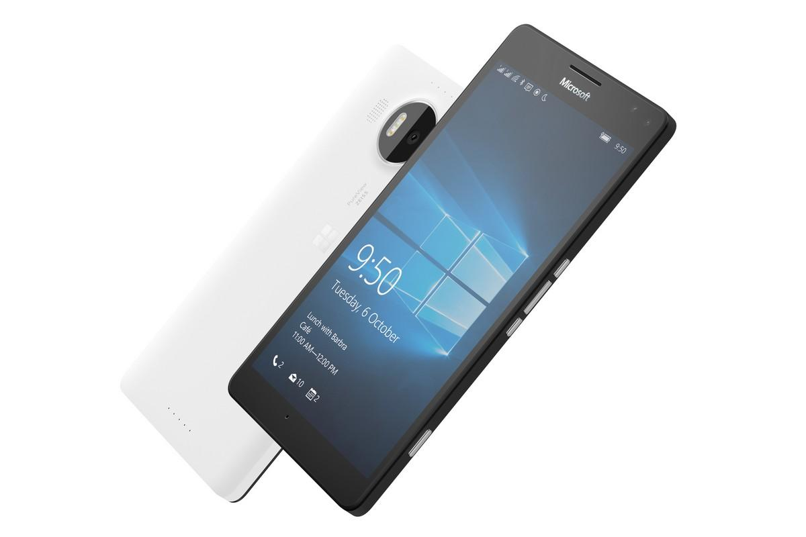
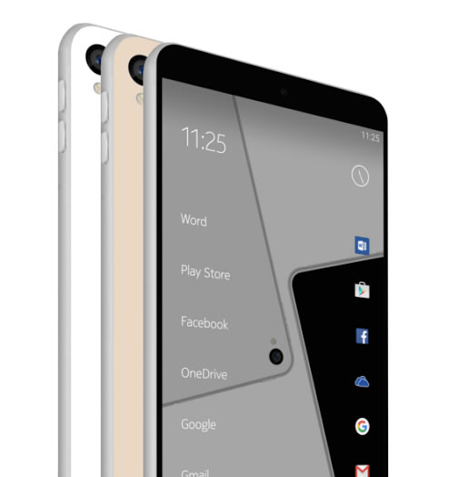

Nokia Mobile Détails
-
Lumia 950
Le dernier des Lumia chez Microsoft pourrait être le Lumia 650 qu’il présentera en Février prochain.

Le Lumia 650 devrait être présenter par Microsoft le 1er février prochain, rapporte Windows Central. Ce smartphone est l’un des modèles de milieu gamme avec un écran 5 pouces en 720p, un processeur Snapdragon 210 ou 212, 1 Go de RAM pour 8 de stockage, et des caméras dorsales et frontales de 8 et 5 mégapixels respectivement.
Si Nokia 650 de Microsoft est loin d’être anecdotique, l’information ne constitue pas un grand événement en soi. D’ailleurs, Redmond prévoit d’annoncer ce dernier venu par un simple billet de blog. Microsoft ajoute en revanche que le 650 pourrait bien être le dernier de la famille Lumia. Pour l’année et peut-être pour toujours.
Rompre définitivement avec l’historique Nokia
Microsoft veut finir définitivement avec les Nokia mobiles, les rumeurs circulent sur un nouveau type de smartphone dénommé "Surface phone" qui pourrait faire ses débuts dans l’année. Cela permetra a Nokia de retrouver jusqu’à la fin de l’année, sa capacité de à pouvoir commercialiser un terminal mobile sous son nom propre.
Ne plus avoir à faire de Lumia sur le marché permettrait de son côté à Microsoft de rompre définitivement les derniers liens virtuellement associés à Nokia et, surtout, éviter ainsi d’entretenir une confusion avec son constructeur historique. En disposant de sa marque propre, l’éditeur, qui entend unifier ses environnements PC et mobile derrière la plate-forme Windows 10, pourra alors appuyer sa stratégie de conquête du marché mobile qui, pour l’heure, peine toujours à convaincre.
-
Nokia C1

Après sa tablette N1 sous Android, Nokia a eu le désir de revenir sur le marché des smartphones. Des premiers rendus d’un smartphone nommé Nokia C1 viennent d’apparaître sur le net. Et pourait être publier avant la fin de l'année 2016.
Le groupe finlandais, ex-numéro un mondial des combinés mobiles, a été détrôné par l'avènement des smartphones et la montée en puissance d'Apple et Samsung, ce qui motive la société a s'investire pour reconquerir le marché mondial.
Des brevets et des talents
Afin de revenir sur la chaîne mondiale, l'entreprise a annoncé de recruté des ingenieurs dans tous les domaines informatiques pour accéder facilement aux informations. Pour cela, il s'oriente vers des accords de licence où, en échange de royalties, il permettra à d'autres fabricants d'assembler et de commercialiser les téléphones vendus sous sa marque.
-
Lumia 650

Ce smartphone a un écran 5 pouces en 720p, un processeur Snapdragon 210 ou 212, 1 Go de RAM, et des caméras dorsales et frontales de 8 et 5 mégapixels respectivement.